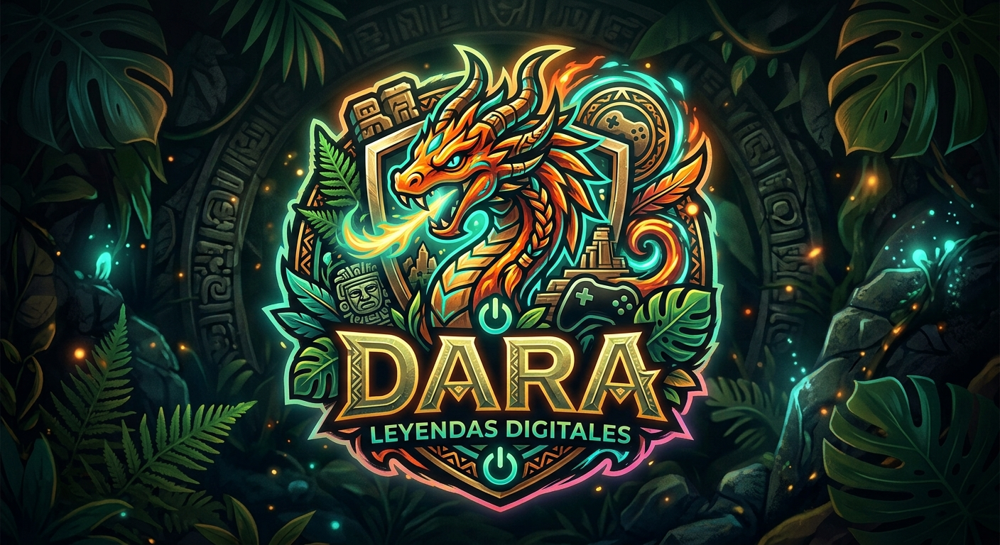
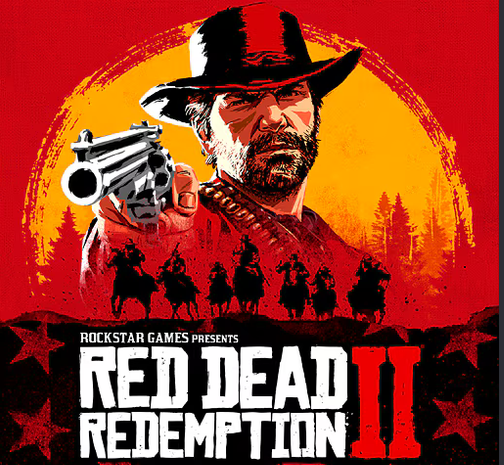

Red Dead Redemption 2 es un videojuego de aventura y acción desarrollado por Rockstar Games. La historia se desarrolla en el oeste salvaje del año 1899, siguiendo a Arthur Morgan, un miembro de la banda de los Van Der Linde.
Ver video en YouTube39,99€
Comprar yadaymer_ladobleD★★★★★
Para mí el mejor mundo abierto jamás creado, es mi juego favorito
Carla_R ★★★★★
El ritmo es lento al principio, pero la historia de Arthur te destroza emocionalmente.